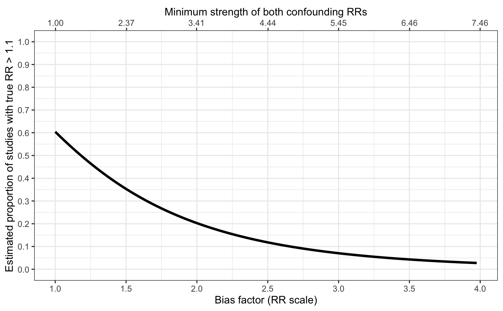

Plots for sensitivity analyses
sens_plot.RdProduces line plots (type="line") showing the bias factor on the relative risk (RR) scale vs. the proportion
of studies with true RRs above q (or below it for an apparently preventive relative risk).
The plot secondarily includes a X-axis scaled based on the minimum strength of confounding
to produce the given bias factor. The shaded region represents a 95% pointwise confidence band.
Alternatively, produces distribution plots (type="dist") for a specific bias factor showing the observed and
true distributions of RRs with a red line marking exp(q).
sens_plot( type, q, muB = NA, Bmin = log(1), Bmax = log(5), sigB = 0, yr, vyr = NA, t2, vt2 = NA, breaks.x1 = NA, breaks.x2 = NA, CI.level = 0.95 )
Arguments
| type |
|
|---|---|
| q | True effect size that is the threshold for "scientific significance" |
| muB | Single mean bias factor on log scale (only needed for distribution plot) |
| Bmin | Lower limit of lower X-axis on the log scale (only needed for line plot) |
| Bmax | Upper limit of lower X-axis on the log scale (only needed for line plot) |
| sigB | Standard deviation of log bias factor across studies (length 1) |
| yr | Pooled point estimate (on log scale) from confounded meta-analysis |
| vyr | Estimated variance of pooled point estimate from confounded meta-analysis |
| t2 | Estimated heterogeneity (tau^2) from confounded meta-analysis |
| vt2 | Estimated variance of tau^2 from confounded meta-analysis |
| breaks.x1 | Breaks for lower X-axis (bias factor) on RR scale (optional for line plot; not used for distribution plot) |
| breaks.x2 | Breaks for upper X-axis (confounding strength) on RR scale (optional for line plot; not used for distribution plot) |
| CI.level | Pointwise confidence level as a proportion |
Details
Arguments vyr and vt2 can be left NA, in which case no confidence
band will appear on the line plot.
Examples
# with variable bias and with confidence band sens_plot( type="line", q=log(1.1), Bmin=log(1), Bmax=log(4), sigB=0.1, yr=log(1.3), vyr=0.005, t2=0.4, vt2=0.03 )#> Warning: Phat is close to 0 or 1. We recommend using bias-corrected and accelerated bootstrapping to estimate all inference in this case.#> Warning: Phat is close to 0 or 1. We recommend using bias-corrected and accelerated bootstrapping to estimate all inference in this case.#> Warning: Phat is close to 0 or 1. We recommend using bias-corrected and accelerated bootstrapping to estimate all inference in this case.#> Warning: Phat is close to 0 or 1. We recommend using bias-corrected and accelerated bootstrapping to estimate all inference in this case.#> Warning: Phat is close to 0 or 1. We recommend using bias-corrected and accelerated bootstrapping to estimate all inference in this case.#> Warning: Phat is close to 0 or 1. We recommend using bias-corrected and accelerated bootstrapping to estimate all inference in this case.#> Warning: Phat is close to 0 or 1. We recommend using bias-corrected and accelerated bootstrapping to estimate all inference in this case.#> Warning: Phat is close to 0 or 1. We recommend using bias-corrected and accelerated bootstrapping to estimate all inference in this case.#> Warning: Phat is close to 0 or 1. We recommend using bias-corrected and accelerated bootstrapping to estimate all inference in this case.#> Warning: Phat is close to 0 or 1. We recommend using bias-corrected and accelerated bootstrapping to estimate all inference in this case.#> Warning: Phat is close to 0 or 1. We recommend using bias-corrected and accelerated bootstrapping to estimate all inference in this case.#> Warning: Phat is close to 0 or 1. We recommend using bias-corrected and accelerated bootstrapping to estimate all inference in this case.#> Warning: Phat is close to 0 or 1. We recommend using bias-corrected and accelerated bootstrapping to estimate all inference in this case.#> Warning: Phat is close to 0 or 1. We recommend using bias-corrected and accelerated bootstrapping to estimate all inference in this case.#> Warning: Phat is close to 0 or 1. We recommend using bias-corrected and accelerated bootstrapping to estimate all inference in this case.#> Warning: Phat is close to 0 or 1. We recommend using bias-corrected and accelerated bootstrapping to estimate all inference in this case.#> Warning: Phat is close to 0 or 1. We recommend using bias-corrected and accelerated bootstrapping to estimate all inference in this case.#> Warning: Phat is close to 0 or 1. We recommend using bias-corrected and accelerated bootstrapping to estimate all inference in this case.#> Warning: Phat is close to 0 or 1. We recommend using bias-corrected and accelerated bootstrapping to estimate all inference in this case.#> Warning: Phat is close to 0 or 1. We recommend using bias-corrected and accelerated bootstrapping to estimate all inference in this case.#> Warning: Phat is close to 0 or 1. We recommend using bias-corrected and accelerated bootstrapping to estimate all inference in this case.#> Warning: Phat is close to 0 or 1. We recommend using bias-corrected and accelerated bootstrapping to estimate all inference in this case.#> Warning: Phat is close to 0 or 1. We recommend using bias-corrected and accelerated bootstrapping to estimate all inference in this case.#> Warning: Phat is close to 0 or 1. We recommend using bias-corrected and accelerated bootstrapping to estimate all inference in this case.#> Warning: Phat is close to 0 or 1. We recommend using bias-corrected and accelerated bootstrapping to estimate all inference in this case.#> Warning: Phat is close to 0 or 1. We recommend using bias-corrected and accelerated bootstrapping to estimate all inference in this case.#> Warning: Phat is close to 0 or 1. We recommend using bias-corrected and accelerated bootstrapping to estimate all inference in this case.#> Warning: Phat is close to 0 or 1. We recommend using bias-corrected and accelerated bootstrapping to estimate all inference in this case.#> Warning: Phat is close to 0 or 1. We recommend using bias-corrected and accelerated bootstrapping to estimate all inference in this case.#> Warning: Phat is close to 0 or 1. We recommend using bias-corrected and accelerated bootstrapping to estimate all inference in this case.#> Warning: Phat is close to 0 or 1. We recommend using bias-corrected and accelerated bootstrapping to estimate all inference in this case.#> Warning: Phat is close to 0 or 1. We recommend using bias-corrected and accelerated bootstrapping to estimate all inference in this case.#> Warning: Phat is close to 0 or 1. We recommend using bias-corrected and accelerated bootstrapping to estimate all inference in this case.#> Warning: Phat is close to 0 or 1. We recommend using bias-corrected and accelerated bootstrapping to estimate all inference in this case.#> Warning: Phat is close to 0 or 1. We recommend using bias-corrected and accelerated bootstrapping to estimate all inference in this case.#> Warning: Phat is close to 0 or 1. We recommend using bias-corrected and accelerated bootstrapping to estimate all inference in this case.#> Warning: Phat is close to 0 or 1. We recommend using bias-corrected and accelerated bootstrapping to estimate all inference in this case.#> Warning: Phat is close to 0 or 1. We recommend using bias-corrected and accelerated bootstrapping to estimate all inference in this case.#> Warning: Phat is close to 0 or 1. We recommend using bias-corrected and accelerated bootstrapping to estimate all inference in this case.#> Warning: Phat is close to 0 or 1. We recommend using bias-corrected and accelerated bootstrapping to estimate all inference in this case.#> Warning: Phat is close to 0 or 1. We recommend using bias-corrected and accelerated bootstrapping to estimate all inference in this case.#> Warning: Phat is close to 0 or 1. We recommend using bias-corrected and accelerated bootstrapping to estimate all inference in this case.#> Warning: Phat is close to 0 or 1. We recommend using bias-corrected and accelerated bootstrapping to estimate all inference in this case.#> Warning: Phat is close to 0 or 1. We recommend using bias-corrected and accelerated bootstrapping to estimate all inference in this case.#> Warning: Phat is close to 0 or 1. We recommend using bias-corrected and accelerated bootstrapping to estimate all inference in this case.#> Warning: Phat is close to 0 or 1. We recommend using bias-corrected and accelerated bootstrapping to estimate all inference in this case.#> Warning: Phat is close to 0 or 1. We recommend using bias-corrected and accelerated bootstrapping to estimate all inference in this case.#> Warning: Phat is close to 0 or 1. We recommend using bias-corrected and accelerated bootstrapping to estimate all inference in this case.#> Warning: Phat is close to 0 or 1. We recommend using bias-corrected and accelerated bootstrapping to estimate all inference in this case.#> Warning: Phat is close to 0 or 1. We recommend using bias-corrected and accelerated bootstrapping to estimate all inference in this case.#> Warning: Phat is close to 0 or 1. We recommend using bias-corrected and accelerated bootstrapping to estimate all inference in this case.#> Warning: Phat is close to 0 or 1. We recommend using bias-corrected and accelerated bootstrapping to estimate all inference in this case.#> Warning: Phat is close to 0 or 1. We recommend using bias-corrected and accelerated bootstrapping to estimate all inference in this case.#> Warning: Phat is close to 0 or 1. We recommend using bias-corrected and accelerated bootstrapping to estimate all inference in this case.#> Warning: Phat is close to 0 or 1. We recommend using bias-corrected and accelerated bootstrapping to estimate all inference in this case.#> Warning: Phat is close to 0 or 1. We recommend using bias-corrected and accelerated bootstrapping to estimate all inference in this case.#> Warning: Phat is close to 0 or 1. We recommend using bias-corrected and accelerated bootstrapping to estimate all inference in this case.#> Warning: Use of `t$eB` is discouraged. Use `eB` instead.#> Warning: Use of `t$phat` is discouraged. Use `phat` instead.#> Warning: Use of `t$lo` is discouraged. Use `lo` instead.#> Warning: Use of `t$hi` is discouraged. Use `hi` instead.#> Warning: Use of `t$eB` is discouraged. Use `eB` instead.#> Warning: Use of `t$phat` is discouraged. Use `phat` instead.# with fixed bias and without confidence band sens_plot( type="line", q=log(1.1), Bmin=log(1), Bmax=log(4), yr=log(1.3), t2=0.4 )#>#>#>#>#>#>#>#>#>#>#>#>#>#>#>#>#>#>#>#>#>#>#>#>#>#>#>#>#>#>#>#>#>#>#>#>#>#>#>#>#>#>#>#>#>#>#>#>#>#>#>#>#>#>#>#>#>#>#>#>#>#>#>#>#>#>#>#>#>#>#>#>#>#>#>#>#>#>#>#>#>#>#>#>#>#>#>#>#>#>#>#>#>#>#>#>#>#>#>#>#>#>#>#>#>#>#>#>#>#>#>#>#>#>#>#>#>#>#>#>#>#>#>#>#>#>#>#>#>#>#>#>#>#>#>#>#>#>#>#>#> Warning: Use of `t$eB` is discouraged. Use `eB` instead.#> Warning: Use of `t$phat` is discouraged. Use `phat` instead.# apparently preventive sens_plot( type="line", q=log(0.90), Bmin=log(1), Bmax=log(4), yr=log(0.6), vyr=0.005, t2=0.4, vt2=0.04 )#> Warning: Phat is close to 0 or 1. We recommend using bias-corrected and accelerated bootstrapping to estimate all inference in this case.#> Warning: Phat is close to 0 or 1. We recommend using bias-corrected and accelerated bootstrapping to estimate all inference in this case.#> Warning: Phat is close to 0 or 1. We recommend using bias-corrected and accelerated bootstrapping to estimate all inference in this case.#> Warning: Phat is close to 0 or 1. We recommend using bias-corrected and accelerated bootstrapping to estimate all inference in this case.#> Warning: Phat is close to 0 or 1. We recommend using bias-corrected and accelerated bootstrapping to estimate all inference in this case.#> Warning: Phat is close to 0 or 1. We recommend using bias-corrected and accelerated bootstrapping to estimate all inference in this case.#> Warning: Phat is close to 0 or 1. We recommend using bias-corrected and accelerated bootstrapping to estimate all inference in this case.#> Warning: Phat is close to 0 or 1. We recommend using bias-corrected and accelerated bootstrapping to estimate all inference in this case.#> Warning: Phat is close to 0 or 1. We recommend using bias-corrected and accelerated bootstrapping to estimate all inference in this case.#> Warning: Phat is close to 0 or 1. We recommend using bias-corrected and accelerated bootstrapping to estimate all inference in this case.#> Warning: Phat is close to 0 or 1. We recommend using bias-corrected and accelerated bootstrapping to estimate all inference in this case.#> Warning: Phat is close to 0 or 1. We recommend using bias-corrected and accelerated bootstrapping to estimate all inference in this case.#> Warning: Phat is close to 0 or 1. We recommend using bias-corrected and accelerated bootstrapping to estimate all inference in this case.#> Warning: Phat is close to 0 or 1. We recommend using bias-corrected and accelerated bootstrapping to estimate all inference in this case.#> Warning: Phat is close to 0 or 1. We recommend using bias-corrected and accelerated bootstrapping to estimate all inference in this case.#> Warning: Phat is close to 0 or 1. We recommend using bias-corrected and accelerated bootstrapping to estimate all inference in this case.#> Warning: Phat is close to 0 or 1. We recommend using bias-corrected and accelerated bootstrapping to estimate all inference in this case.#> Warning: Phat is close to 0 or 1. We recommend using bias-corrected and accelerated bootstrapping to estimate all inference in this case.#> Warning: Phat is close to 0 or 1. We recommend using bias-corrected and accelerated bootstrapping to estimate all inference in this case.#> Warning: Phat is close to 0 or 1. We recommend using bias-corrected and accelerated bootstrapping to estimate all inference in this case.#> Warning: Phat is close to 0 or 1. We recommend using bias-corrected and accelerated bootstrapping to estimate all inference in this case.#> Warning: Phat is close to 0 or 1. We recommend using bias-corrected and accelerated bootstrapping to estimate all inference in this case.#> Warning: Phat is close to 0 or 1. We recommend using bias-corrected and accelerated bootstrapping to estimate all inference in this case.#> Warning: Phat is close to 0 or 1. We recommend using bias-corrected and accelerated bootstrapping to estimate all inference in this case.#> Warning: Phat is close to 0 or 1. We recommend using bias-corrected and accelerated bootstrapping to estimate all inference in this case.#> Warning: Phat is close to 0 or 1. We recommend using bias-corrected and accelerated bootstrapping to estimate all inference in this case.#> Warning: Phat is close to 0 or 1. We recommend using bias-corrected and accelerated bootstrapping to estimate all inference in this case.#> Warning: Phat is close to 0 or 1. We recommend using bias-corrected and accelerated bootstrapping to estimate all inference in this case.#> Warning: Phat is close to 0 or 1. We recommend using bias-corrected and accelerated bootstrapping to estimate all inference in this case.#> Warning: Phat is close to 0 or 1. We recommend using bias-corrected and accelerated bootstrapping to estimate all inference in this case.#> Warning: Phat is close to 0 or 1. We recommend using bias-corrected and accelerated bootstrapping to estimate all inference in this case.#> Warning: Phat is close to 0 or 1. We recommend using bias-corrected and accelerated bootstrapping to estimate all inference in this case.#> Warning: Use of `t$eB` is discouraged. Use `eB` instead.#> Warning: Use of `t$phat` is discouraged. Use `phat` instead.#> Warning: Use of `t$lo` is discouraged. Use `lo` instead.#> Warning: Use of `t$hi` is discouraged. Use `hi` instead.#> Warning: Use of `t$eB` is discouraged. Use `eB` instead.#> Warning: Use of `t$phat` is discouraged. Use `phat` instead.# distribution plot: apparently causative # commented out because takes 5-10 seconds to run # sens_plot( type="dist", q=log(1.1), muB=log(2), # yr=log(1.3), t2=0.4 ) # distribution plot: apparently preventive # commented out because takes 5-10 seconds to run # sens_plot( type="dist", q=log(0.90), muB=log(1.5), # yr=log(0.7), t2=0.2 )